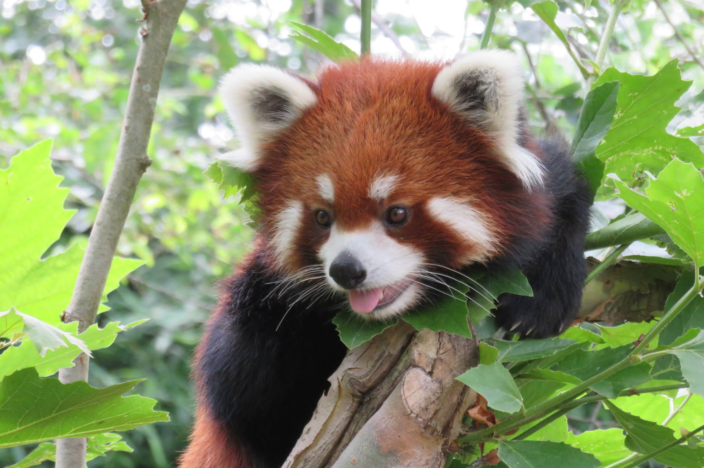
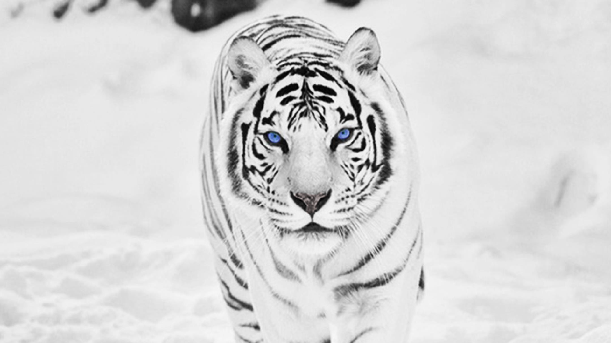

Red Panda
The red panda (Ailurus fulgens), also called the lesser panda, the red bear-cat, and the red cat-bear, is a mammal native to the eastern Himalayas and southwestern China.[1] It has reddish-brown fur, a long, shaggy tail, and a waddling gait due to its shorter front legs; it is slightly larger than a domestic cat. It is arboreal, feeds mainly on bamboo, but also eats eggs, birds, and insects. It is a solitary animal, mainly active from dusk to dawn, and is largely sedentary during the day.
The red panda has been classified as Endangered by the IUCN because its wild population is estimated at less than 10,000 mature individuals and continues to decline due to habitat loss and fragmentation, poaching, and inbreeding depression, although red pandas are protected by national laws in their range countries.[1][4]
The red panda is the only living species of the genus Ailurus and the family Ailuridae. It has been previously placed in the raccoon and bear families, but the results of phylogenetic analysis provide strong support for its taxonomic classification in its own family, Ailuridae, which is part of the superfamily Musteloidea along with the weasel, raccoon and skunk families.[5] Two subspecies are recognized.[3] It is not closely related to the giant panda, which is a basal ursid.

White Siberian Tiger
The existence of white Siberian tigers has not been scientifically documented, despite occasional unsubstantiated reports of sightings of white tigers in the regions where wild Siberian tigers live. It may be that the white mutation does not exist in the wild Siberian tiger population: no white Siberian tigers have been born in captivity, despite the fact that the subspecies has been extensively bred during the last few decades (with much outbreeding between the different Siberian lineages for purposes of conservation genetics); a recessive allele should occasionally turn up in a homozygous state during such breeding, and in this particular case yield white tigers from normally-colored parents, but no such animals have been reported.
The famous white Siberian tigers found in captivity are actually not pure Siberian tigers. They are instead the result of Siberian tigers breeding with Bengal tigers. The gene for white coating is quite common among Bengal tigers, but the natural birth of a white Bengal tiger is still a very rare occasion in the wild, where white tigers are not bred selectively.
The white tiger is not considered a tiger subspecies, but rather a hybrid mutant variant of the existing tiger subspecies. If a pure white Siberian tiger were to be born, it would therefore not be selectively bred within the tiger conservation programs. It would, however, probably still be selectively bred outside the program in an effort to create more white Siberian tigers. Due to the popularity of white tigers, they are used to attract visitors to zoos. White tigers are found in zoos in China commonly.

Quokka
The quokka weighs 2.5 to 5 kilograms (5.5 to 11.0 lb) and is 40 to 54 centimetres (16 to 21 in) long with a 25-to-30-centimetre-long (9.8 to 11.8 in) tail, which is fairly short for a macropod. It has a stocky build, rounded ears, and a short, broad head. Although looking rather like a very small kangaroo, it can climb small trees and shrubs. Its coarse fur is a grizzled brown colour, fading to buff underneath.
After a month of gestation, females give birth to a baby called a joey. Females can give birth twice a year. The joey lives in its mother’s pouch for six months. Once it leaves the pouch, the joey relies on its mother for milk for two more months. At 1.5 years old, quokkas are old enough to have their own babies.